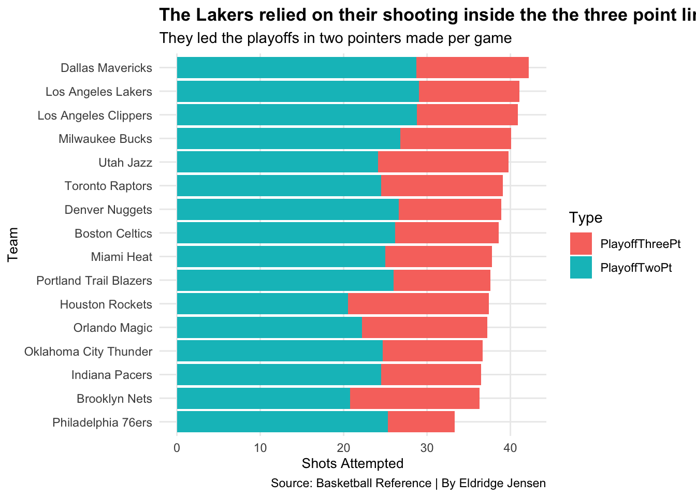
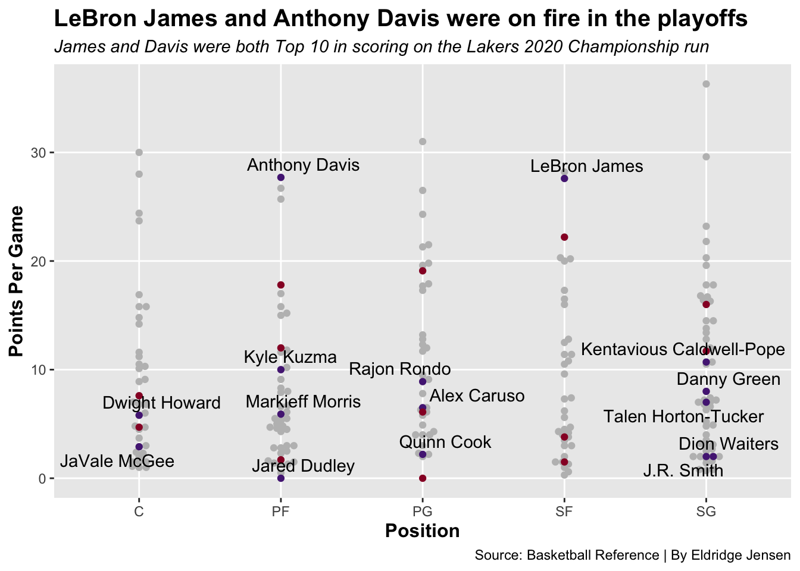

The Lakers 2020 Championship was one of the hardest to win in recent memory.
Lakers
LeBron James
NBA
Finals
Author
Eldridge Jensen
Published
April 16, 2023
The Los Angeles Lakers 2020 Championship as an asterix on it in the eyes of many NBA fans, dubbing the title a “Mickey Mouse Ring” or “The Bubble Ring,” which in my opinion does not give this Championship win the respect that it deserves. This win was a culmination of grit, perseverance, and doing the right thing, the players took the COVID protocols seriously and were able to stay healthy in the three month hiatus that the league had to take. Every team had the same or similar conditions during the mini off season, the Lakers just took advantage of this opportunity to rest up for the playoffs, while staying in good enough shape to still compete at a high enough level to win.
On March 11th, 2020 the NBA season was officially shut down to COVID-19 infecting the world causing a nationwide lock down and quarantine, the NBA did not resume play until July 30th, but during this period the only games that were going on were “seeding games” where the Lakers only played in 8 games where they went 3-5, this was mainly due to resting the starters, because they were locked in at the one seed after the first couple of games. The Play-ins started on August 15th and the Playoffs officially started on August 17th. In the playoffs the Lakers went 12-3 before getting to the finals and then beat the Heat 4-2. They flew threw the finals handling every team seemingly very easily.
Code
ggplot(points, aes(totalpoints, fill = COVID)) +geom_density(alpha =0.25) +geom_vline(xintercept =222.9, linewidth =1, color ="green") +geom_vline(xintercept =231.4, linewidth =1, color ="red") +scale_fill_manual(values =c("green", "red")) +theme_classic()+labs(x ="Total Points",y ="Density",title ="Do Players Play Better Without Fans?",subtitle ="The Average Number of Points Per Game Went Up Without Fans",caption ="By Eldridge Jensen" ) +theme_grey() +theme(plot.title =element_text(size =15, face ="bold"),axis.title =element_text(size =12, face ="bold"),plot.subtitle =element_text(size =11, face ="italic"),panel.grid.minor =element_blank() )
Code
ggsave("image.png")
Saving 7 x 5 in image
During this time there were very little fans, family slowly started getting let in during the later series, but for the first month the only people allowed were players and staff. So without fans players were able to score more, since there was very little noise in the arenas compared to an average NBA game, players could focus more on the game, which caused an increase in scoring in the bubble. This might also have to do with the quality of teams, since the only teams in the bubble were those who were close to making the playoffs.
Code
shooting <- postseasonstats %>%group_by(Team) %>%# We need conference here to carry it oversummarise(PlayoffTwoPt =sum(X2P),PlayoffThreePt =sum(X3P), )
ggplot(shootingwide, aes(x=reorder(Team, Points), weight=Points, fill=Type)) +geom_bar() +coord_flip() +labs(y ="Shots Attempted",x ="Team",title ="The Lakers relied on their shooting inside the the three point line",subtitle ="They led the playoffs in two pointers made per game",caption ="Source: Basketball Reference | By Eldridge Jensen" ) +scale_y_continuous(labels = scales::comma) +theme_minimal() +theme(plot.title =element_text(size =13, face ="bold"),plot.subtitle =element_text(size =11),axis.title =element_text(size =10),panel.grid.minor =element_blank() )

Unlike most other teams, the Lakers didn’t rely too heavily on their three point game in this season, instead they would attack the paint, and who could blame them? With LeBron James and Anthony Davis attacking the basket, not a whole lot of players have the ability to stop them.
ggplot() +geom_beeswarm(data = activeplayers,aes(x = Pos, y = PPG),color ="grey" ) +geom_beeswarm(data = la,aes(x = Pos, y = PPG),color ="#552583" ) +geom_beeswarm(data = mi,aes(x = Pos, y = PPG),color ="#98002E" ) +geom_text_repel(data = la,aes(x = Pos, y = PPG, label = Player),color ="black" ) +labs(x ="Position",y ="Points Per Game",title ="LeBron James and Anthony Davis were on fire in the playoffs",subtitle ="James and Davis were both Top 10 in scoring on the Lakers 2020 Championship run",caption ="Source: Basketball Reference | By Eldridge Jensen" ) +theme_grey() +theme(plot.title =element_text(size =15, face ="bold"),axis.title =element_text(size =12, face ="bold"),plot.subtitle =element_text(size =11, face ="italic"),panel.grid.minor =element_blank() )

In the playoffs, LeBron James and Anthony Davis were the two key players for the Lakers, with each averaging 27 points per game. This dynamic duo was the heart and sole of the team, and it showed, after having a diisaterous season after winning the championship since both players were dealing with injuries.
Code
la <-c("Offensive"=10.5, "Defensive"=33.5)nba <-c("Offensive"=8.5, "Defensive"=34.5)
Code
iron(waffle(la, rows =3, title="Lakers Average Rebounding Per Game", xlab="1 Square = 1 Rebound",colors =c("#552583", "#FDB927")),waffle(nba, rows =3, title="NBA Average Rebounding Per Game", xlab="1 Square = 1 Rebound",colors =c("red", "blue")))
The Lakers were also one of the best rebounding teams in the league this year, averaging 10 offensive rebounds per game which was tied for 4th in the NBA and they were in the top ten in total rebounds. Their ability to get to the loose ball was a key part of their success.